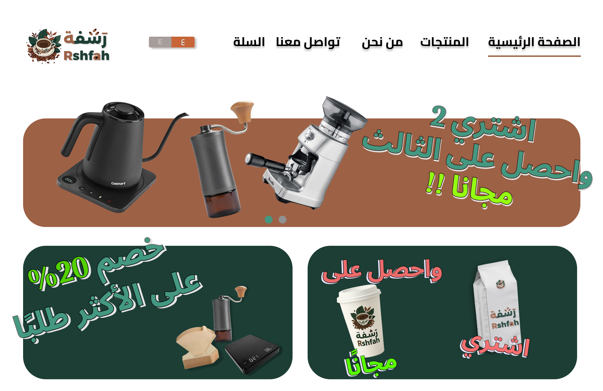
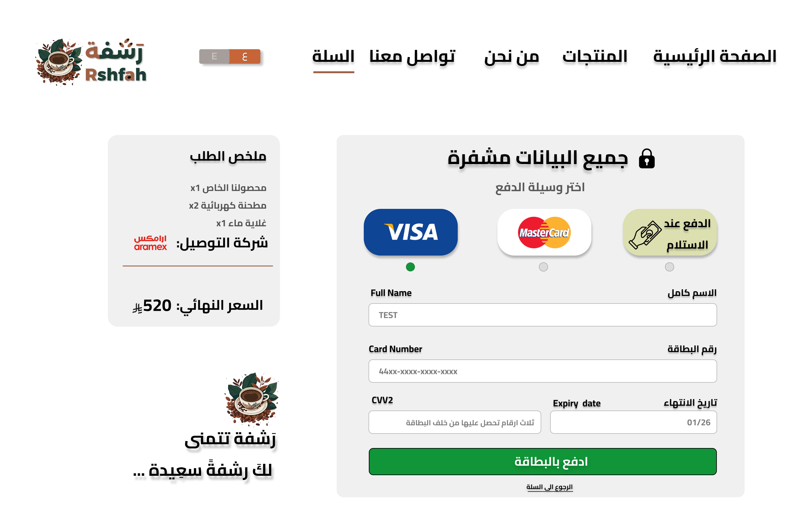
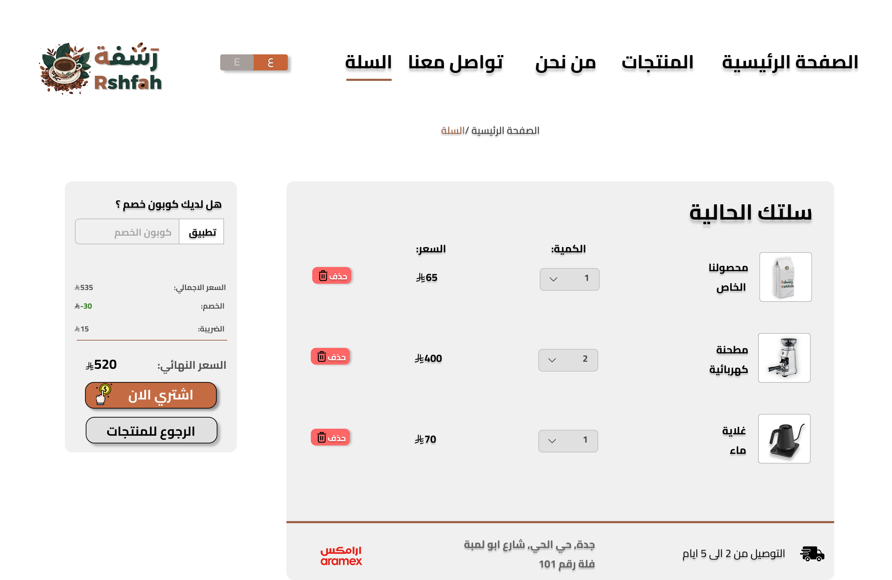
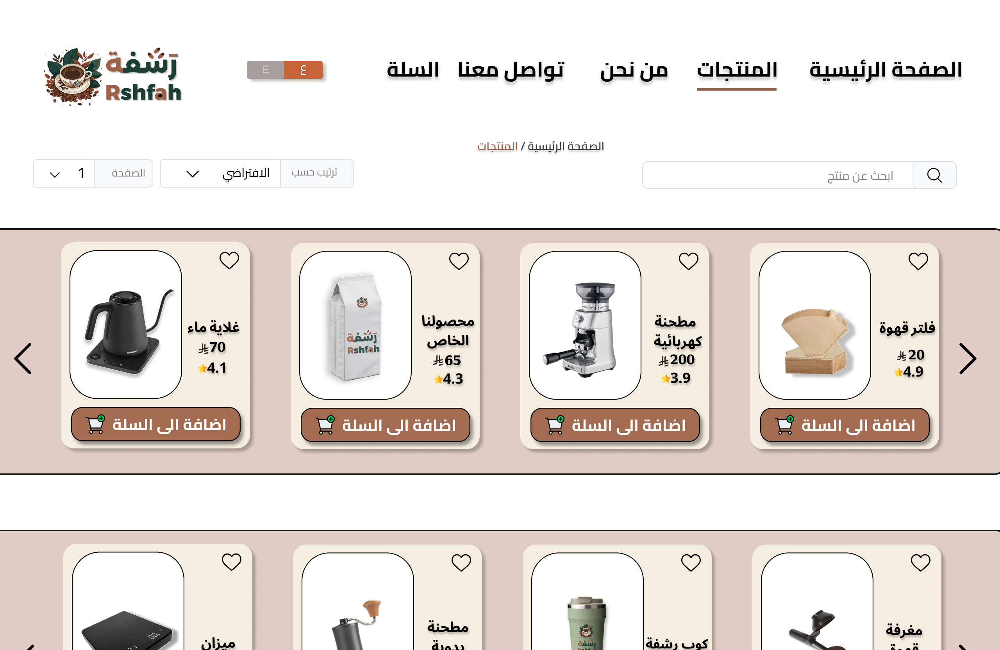

Featured Projects
CS50 Questions Web Application
A comprehensive web application developed as a graduation project for the CS50 course at Harvard University. It helps students practice by making questions and testing themselves.
Python/Flask
HTML/CSS
🔍 1 / 5





Cafe Store UI Design
A complete, user-centric interface designed in Figma. Features intuitive wireframes and high-fidelity mockups for a home page and secure payment portal.
Figma
UI/UX
C-Thread Simulator
An interactive web page designed to visually explain thread creation and the `fork()` and `wait()` commands in the C programming language.
C Language
OS Concepts